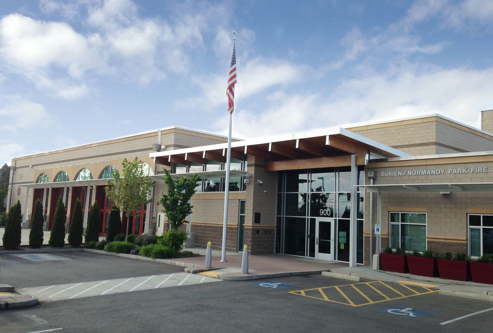

General Meetings
HARC meets every 4th Saturday of each month at 10am. We skip June (Field Day) and December (Christmas). Our current meeting location is:
Burien Fire Station #28
900 SW 146th St
Burien, WA 98166
Board of Trustees Meetings
The regular meeting of the Board of Trustees takes place on the Wednesday preceding the General meeting, at 6:30 PM via Zoom.
Visitors are welcomed at any board meeting. Please schedule with the Board of Trustees if you have business you would like to present.